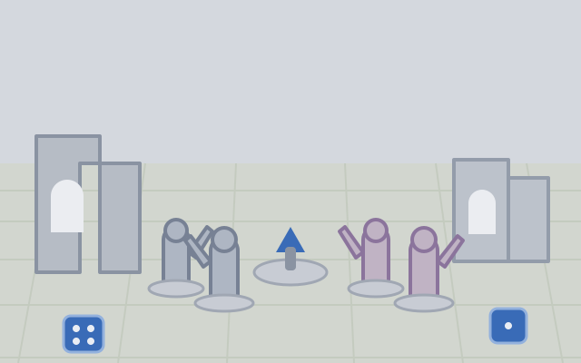

Edge highlighting without the chalky finish
Most edge highlights read as chalk because the last pass is too opaque and too wide. Here is the thinning ratio I use and where to stop.
Painting tutorials, basing recipes and event write-ups, mostly from the people behind the counter.
Showing 6 of 71 posts, newest first.
Page 1 of 12
Most edge highlights read as chalk because the last pass is too opaque and too wide. Here is the thinning ratio I use and where to stop.

Bases are where an army stops looking like loose models. This is the fastest recipe I have found that still stands up close.

Spray primer fails in a specific and predictable way above about seventy per cent humidity. Here is what is happening and how to recover a furry model.

One A2 sheet, a bread knife and an evening gets you four modular wall sections that pack flat.

Thirty-two players, five rounds, and a top table nobody predicted. The full breakdown with lists.

Light, height and where you put the water pot. Three cheap changes that doubled how often I paint.